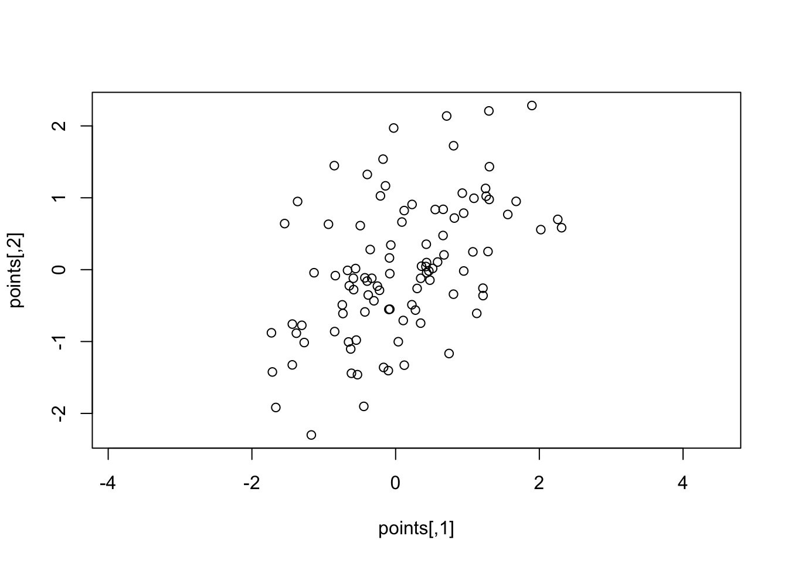
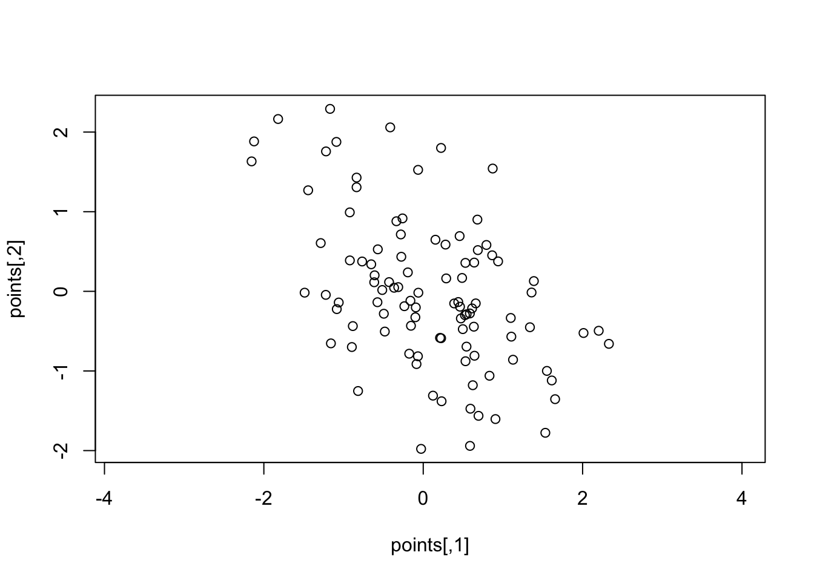
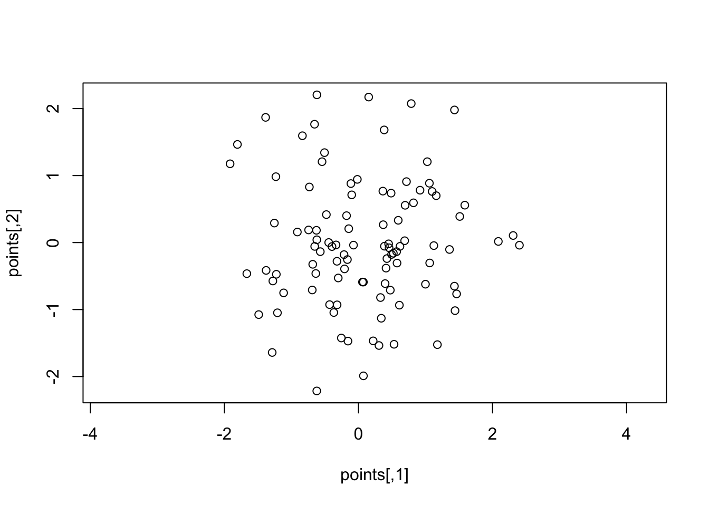
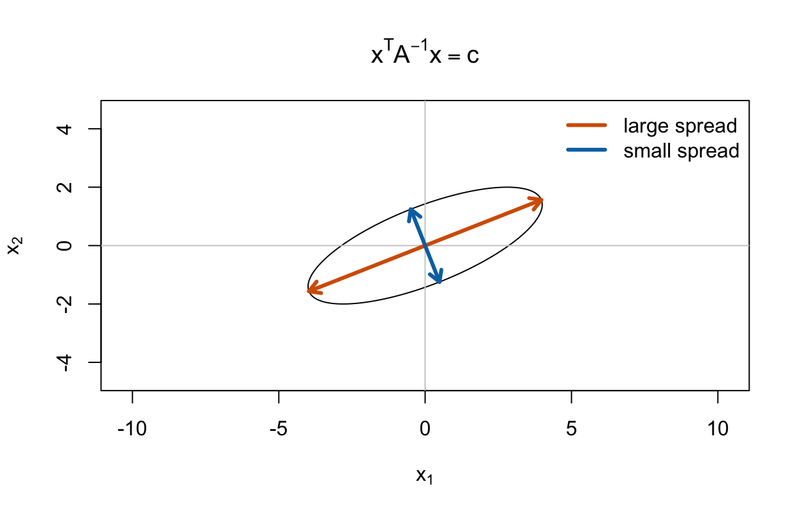

A <- matrix(c(1, 2, 2, 1), nrow = 2)
A [,1] [,2]
[1,] 1 2
[2,] 2 1B <- matrix(c(0, 1, 0, 1), nrow = 2)
B [,1] [,2]
[1,] 0 0
[2,] 1 1The tidy way of thinking: rows are observations, columns are measurements.
Dimension reduction is the art of replacing many columns with a few carefully chosen (or constructed) columns.

SNP data typically record, for many individuals and many SNP locations, how many copies of a particular allele each person carries. Because humans have two copies of most chromosomes, a SNP is encoded as 0, 1, or 2 copies of the allele.
. . .
How to visualize?
A <- matrix(c(1, 2, 2, 1), nrow = 2)
A [,1] [,2]
[1,] 1 2
[2,] 2 1B <- matrix(c(0, 1, 0, 1), nrow = 2)
B [,1] [,2]
[1,] 0 0
[2,] 1 1Matrix multiplication proceeds row by column.
A %*% B # multiplication [,1] [,2]
[1,] 2 2
[2,] 1 1. . .
The single entry in row 1, column 1 is just a dot product:
\[\require{enclose} \left[ \begin{array}{c} \enclose{circle}[mathcolor="red",padding="6px"]{\begin{array}{cc}1 & 2\end{array}}\\ \begin{array}{cc}2 & 1\end{array} \end{array} \right] \left[ \begin{array}{cc} \enclose{circle}[mathcolor="red",padding="6px"]{\begin{array}{c}0\\1\end{array}} & \begin{array}{c}0\\1\end{array} \end{array} \right] = \left[ \begin{array}{cc} \enclose{circle}[mathcolor="red",padding="8px"]{1(0)+2(1)} & 1(0)+2(1)\\ 2(0)+1(1) & 2(0)+1(1) \end{array} \right]\]
Same rule for every entry: choose a row, choose a column, multiply across, add up.
A vector is just a matrix with one column.
\[\require{enclose} \left[ \begin{array}{cc} 3 & 1\\ 1 & 2 \end{array} \right] \left[ \enclose{circle}[mathcolor="red",padding="6px"]{\begin{array}{c}2\\1\end{array}} \right] = \left[ \begin{array}{c} 3(2)+1(1)\\ 1(2)+2(1) \end{array} \right] = \left[ \begin{array}{c} 7\\ 4 \end{array} \right]\]
. . .
We can pre-multiply (put the vector on the left side) too:
\[\require{enclose} \mathbf{x}^T A \mathbf{x} = \enclose{circle}[mathcolor="red",padding="4px"]{\begin{bmatrix}2 & 1\end{bmatrix}} \begin{bmatrix} 3 & 1\\ 1 & 2 \end{bmatrix} \begin{bmatrix}2\\1\end{bmatrix} = \begin{bmatrix}2 & 1\end{bmatrix} \begin{bmatrix}7\\4\end{bmatrix} = 18\]
This pattern is called a quadratic form. It takes a direction \(\mathbf{x}\) and turns it into one number.
The identity matrix has 1s on its diagonals and 0s in the off-diagonal entries.
identity <- diag(1, nrow = 2)
identity [,1] [,2]
[1,] 1 0
[2,] 0 1A %*% identity == A [,1] [,2]
[1,] TRUE TRUE
[2,] TRUE TRUE. . .
The identity matrix is the matrix version of multiplying by 1:
\[A I = A\]
It is useful as a baseline: some matrices stretch, rotate, or shear vectors; the identity leaves them alone.
A symmetric matrix \(A\) is positive definite if
\[\mathbf{x}^T A \mathbf{x} > 0 \quad \text{for every nonzero vector } \mathbf{x}.\]
. . .
Intuition:
. . .
For covariance matrices, positive definite is the condition that let’s us visualize it as an ellipse instead of a line, or point (if positive semi-definite).
A covariance matrix stores how variables vary together.
For two variables:
\[A = \begin{bmatrix} \mathrm{var}(x_1) & \mathrm{cov}(x_1, x_2)\\ \mathrm{cov}(x_1, x_2) & \mathrm{var}(x_2) \end{bmatrix}\]
. . .
Read it geometrically:
set.seed(1)
A <- matrix(c(1, .5, .5, 1), nrow = 2)
points <- mvtnorm::rmvnorm(100, mean = c(0,0), sigma = A)
plot(points, asp = 1)
set.seed(1)
A <- matrix(c(1, -.5, -.5, 1), nrow = 2)
points <- mvtnorm::rmvnorm(100, mean = c(0,0), sigma = A)
plot(points, asp = 1)
set.seed(1)
A <- matrix(c(1, 0, 0, 1), nrow = 2)
points <- mvtnorm::rmvnorm(100, mean = c(0,0), sigma = A)
plot(points, asp = 1)
A covariance matrix \(A\) can be visualized by the points that have the same “covariance distance” from the center:
\[\mathbf{x}^T A^{-1} \mathbf{x} = c\]
In two dimensions, that equation draws an ellipse.

A <- matrix(c(4, 1.4,
1.4, 1), nrow = 2)
level <- 4
theta <- seq(0, 2 * pi, length.out = 300)
circle <- rbind(cos(theta), sin(theta))
eig <- eigen(A)
ellipse <- t(eig$vectors %*% diag(sqrt(level * eig$values)) %*% circle)
lim <- max(abs(ellipse)) * 1.15
plot(ellipse, type = "l", asp = 1,
xlim = c(-lim, lim), ylim = c(-lim, lim),
xlab = expression(x[1]), ylab = expression(x[2]),
main = expression(x^T * A^{-1} * x == c))
abline(h = 0, v = 0, col = "gray80")
cols <- c("#D55E00", "#0072B2")
for (j in 1:2) {
axis_vec <- eig$vectors[, j] * sqrt(level * eig$values[j])
arrows(0, 0, axis_vec[1], axis_vec[2],
length = 0.10, lwd = 3, col = cols[j])
arrows(0, 0, -axis_vec[1], -axis_vec[2],
length = 0.10, lwd = 3, col = cols[j])
}
legend("topright", legend = c("large spread", "small spread"),
col = cols, lwd = 3, bty = "n")Some special directions do not get turned by a matrix. They only get stretched or shrunk.
\[A \mathbf{v} = \lambda \mathbf{v}\]
. . .
For a covariance ellipse:
PCA asks:
Can we rotate the coordinate system so the first axis catches as much variation as possible?
. . .
The answer comes from the covariance matrix:
Dimension reduction happens when we keep only the first few PC scores.
For a data matrix \(X\) with rows as observations and columns as variables:
. . .
In R:
pca <- prcomp(X, center = TRUE, scale. = TRUE)
pca$x # principal component scores
pca$rotation # principal component directionsSuppose students with high coding scores also tend to have high statistics scores.
toy <- data.frame(
coding = c(1, 2, 3, 4, 5, 6),
stats = c(1.1, 1.9, 3.2, 3.8, 5.1, 5.9)
)
pca_toy <- prcomp(toy, scale. = TRUE)
round(summary(pca_toy)$importance, 3) PC1 PC2
Standard deviation 1.413 0.057
Proportion of Variance 0.998 0.002
Cumulative Proportion 0.998 1.000. . .
PC1 is almost the average of the two standardized columns:
\[\mathrm{PC1} \approx .71(\text{coding}) + .71(\text{stats})\]
So the two-column data set can be summarized by one “overall performance” axis with very little loss.

Novembre et al. (2008) used PCA on European genetic data.
. . .
. . .
The striking part: the first two PCs resemble a map of Europe, even though PCA was only told about genetic variation.
. . .
Geometric lesson: the leading eigenvectors of a covariance matrix can reveal real low-dimensional structure.
Image: Wikimedia Commons version of Novembre et al., Nature 456:98-101.
The goal of MDS is to represent \(q\) objects (data points) in \(p\) dimensions.
Common target dimensions are \(p = 2\) or \(p = 3\) for visualization purposes.
MDS requires that for every pair of data points \((i; j) \in (1, \ldots, q; 1, \ldots, q)\), we observe a dissimilarity measure (often distance) \(d_{ij} = d_{ji}\).
The goal of MDS is to estimate \(p \times q\) parameter matrix \(\mathbf{X}\) where the \(i\)th column \(\mathbf{x}_i\) is estimated by minimizing the function
\[f(\mathbf{X}) = \sum_{1 \leq i \leq j \leq q} w_{ij} (d_{ij} - ||\mathbf{x}_i - \mathbf{x}_j||)^2\]
where \(w_{ij} = w_{ji}\) is a nonnegative weight and \(||\cdot||\) is an arbitrary norm, often taken to be the Euclidean (\(L_2\)) norm.
. . .
Plain-English version:
The function
\[f(\mathbf{X}) = \sum_{1 \leq i \leq j \leq q} w_{ij} (d_{ij} - ||\mathbf{x}_i - \mathbf{x}_j||)^2\]
is
. . .
MDS is another form of dimension reduction: it trades a large table of pairwise distances for a low-dimensional picture.